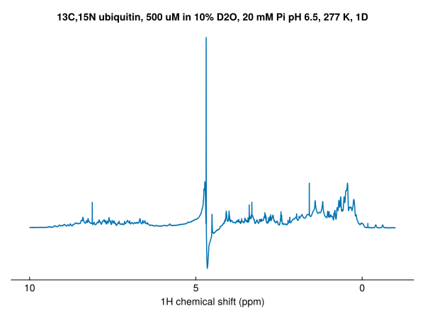
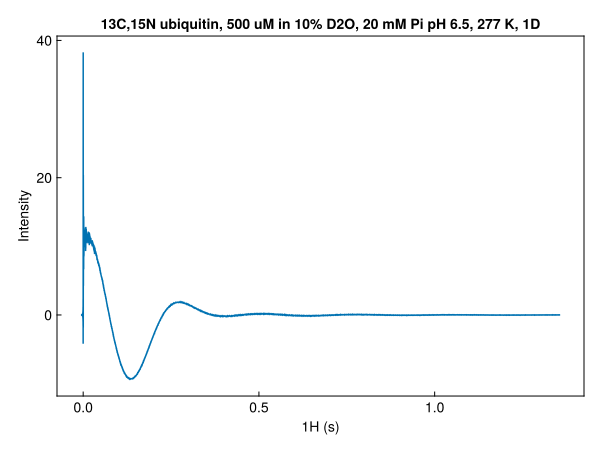
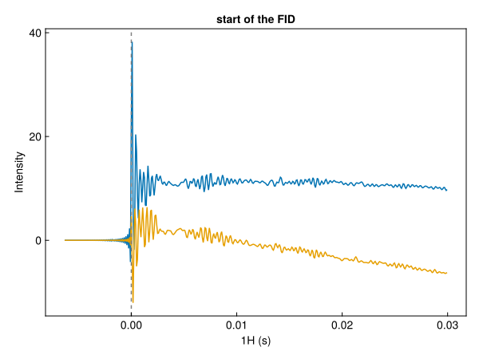
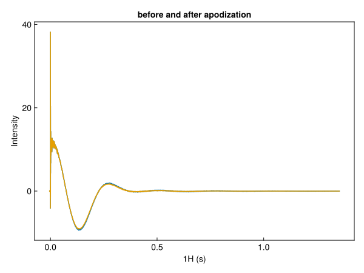
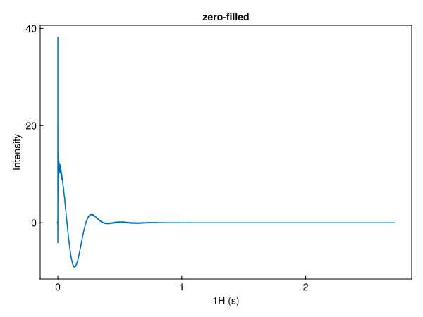
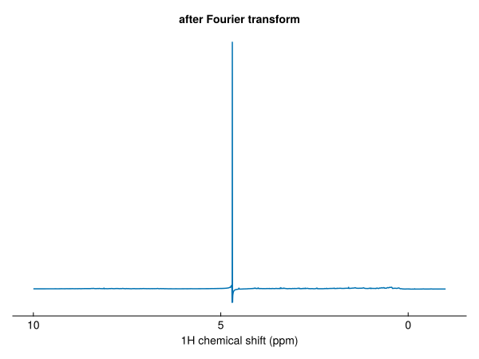
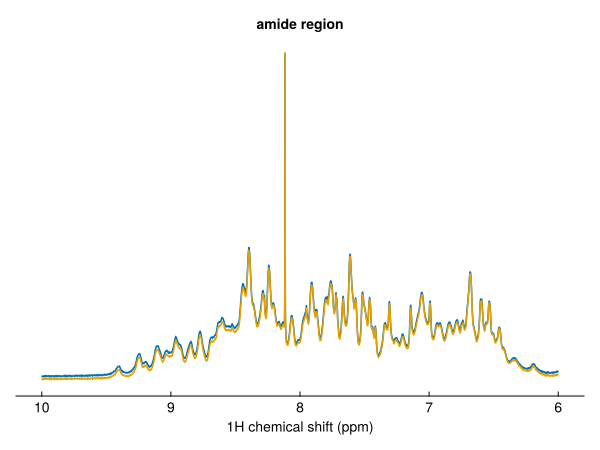
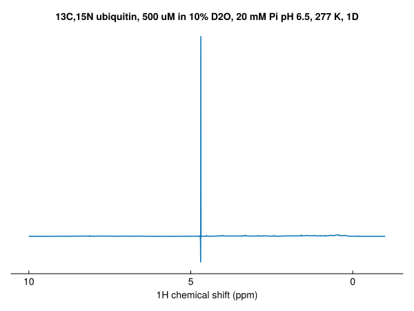

Processing a 1D spectrum
This tutorial turns a raw ¹H FID into a spectrum, first in one step with autoprocess and then one step at a time, plotting the data after each step. The FID is a 1D ¹H spectrum of ubiquitin in H₂O, recorded with excitation sculpting to suppress the water signal.
using NMRTools, CairoMakie
fid = exampledata("1D_1H"; fid=true)For your own data, use loadfid with the experiment folder: fid = loadfid("path/to/experiment/1").
In one step
spec = autoprocess(fid)
fig = nmrplot(spec[-1 .. 10])
autoprocess removes the residual water signal with a solvent filter (for ¹H spectra in H₂O), applies a cos² window, zero-fills to twice the size, Fourier transforms and phases the spectrum automatically, and returns the real part. The rest of this page goes through these steps, leaving the water in; see Solvent filtering for the filter.
The FID
loadfid returns time-domain data, with a time axis in seconds:
dims(fid)(↓ T1Dim Sampled{Float64} -0.006323199999999984:8.319999999999979e-5:1.3567423999999966 ForwardOrdered Regular Points)fig = nmrplot(fid)
The FID is complex. nmrplot draws the real part; the imaginary part is imag.(fid). Zooming in on the start shows the two parts, and the points before t = 0:
start = fid[-0.007 .. 0.03]
fig, ax, _ = nmrplot(start; title="start of the FID")
nmrplot!(ax, imag.(start))
vlines!(ax, [0.0]; color=:grey, linestyle=:dash)
The points before t = 0 are the build-up of the spectrometer's digital filter. loadfid keeps them, and the Fourier transform accounts for them; see Bruker data and TopSpin conventions.
Apodization
apodize multiplies the FID by a window function, here a cos² window that falls to zero at the end of the acquisition time. This removes the truncation artefacts ("sinc wiggles") that an FID cut off before it has decayed would give:
windowed = apodize(fid, Cos2Window())
fig, ax, _ = nmrplot(fid; title="before and after apodization")
nmrplot!(ax, windowed)
The window is recorded in the metadata of the time dimension:
windowed[T1Dim, :window]Cos2Window(1.3568255999999965)See Window functions for the other windows.
Zero-filling
zerofill appends zeros to the FID, doubling its length by default. This gives more points in the spectrum, which interpolates the lineshapes:
filled = zerofill(windowed)
size(windowed), size(filled)((16384,), (32768,))fig = nmrplot(filled; title="zero-filled")
Fourier transform
ft turns the time dimension into a frequency dimension:
unphased = ft(filled)
dims(unphased)(↓ F1Dim Sampled{Float64} 14.70884469643685:-0.0006111259813435601:-5.3159203342475845 ReverseOrdered Regular Points)The spectrum is still complex, and not yet phased:
fig = nmrplot(real(unphased)[-1 .. 10]; title="after Fourier transform")
Phasing
autophase estimates the zero- and first-order phase corrections and applies them:
phased = autophase(unphased)
phased[F1Dim, :phase](p0 = 14.093518856978621, p1 = 2.1841567902669126)The corrections can also be set by hand with phase, in degrees. The values use the same convention as TopSpin's PHC0 and PHC1, so phases from TopSpin can be copied directly:
manual = phase(unphased, F1Dim, 16.8, 0.0)
fig, ax, _ = nmrplot(real(phased)[6 .. 10]; title="amide region")
nmrplot!(ax, real(manual)[6 .. 10])
The real spectrum
The phased spectrum still has an imaginary part. real takes the real part, giving a Float64 spectrum:
final = real(phased)
eltype(phased), eltype(final)(Multicomplex{Float64, 1, 2}, Float64)fig = nmrplot(final[-1 .. 10])
As a pipeline
Each processing function returns a new spectrum, and called without data it returns a function, so the steps can be chained with |>:
spec = fid |> apodize(Cos2Window()) |> zerofill |> ft |> autophase |> realNext steps
- Process step by step: window functions, solvent filtering, phasing options, extracting regions and pseudo-2D data
- Process a 2D with linear prediction
- Save spectra and FIDs
- Bruker data and TopSpin conventions